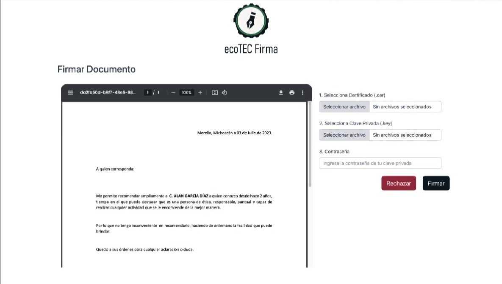
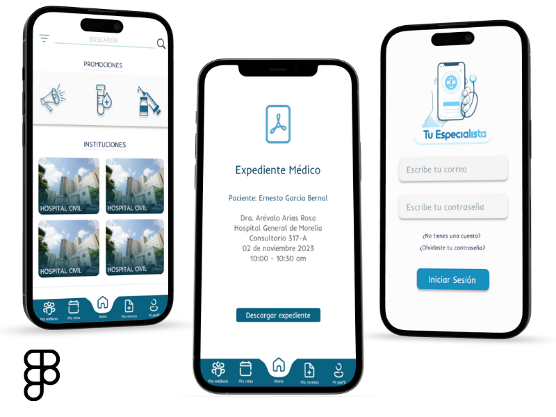
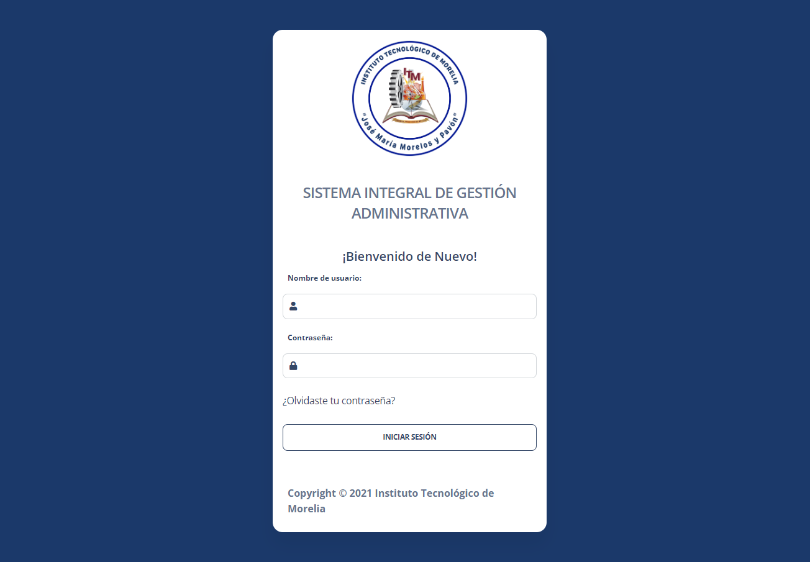
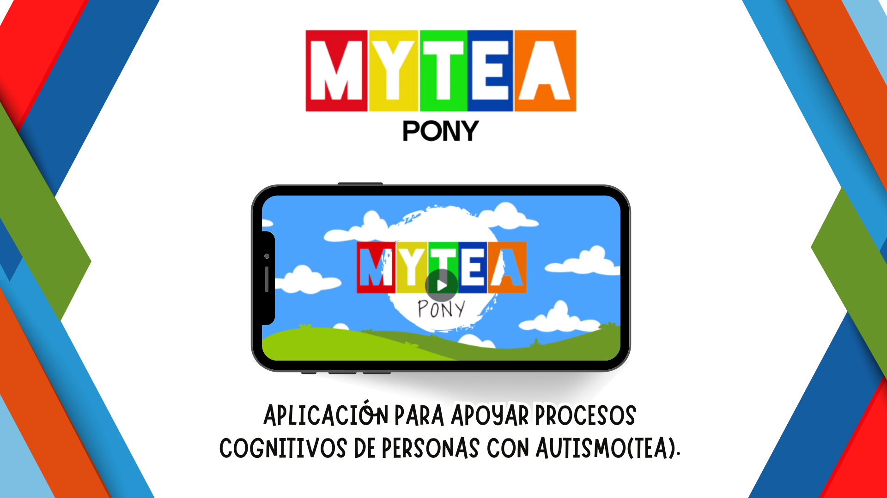
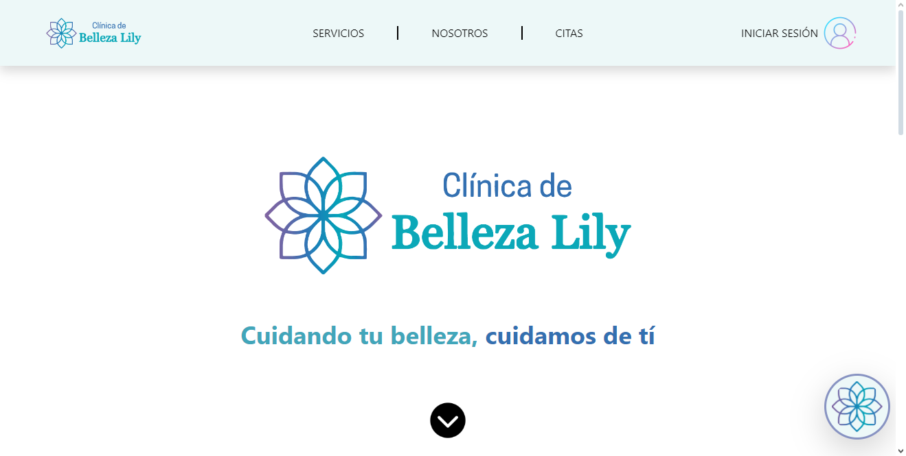

Mis Proyectos
Aplicación para la firma digital de documentos del ITMorelia.
EcoTec Firmas es una aplicación pensada para evitar el uso de papel y firmar documentos importantes con la E-Firma del usuario.
Aunque esta aplicación aún no se ha subido a producción, mi participación fue activa, apoyando tanto en el front-end como en el back-end. Esta aplicación web está siendo desarrollada en Angular para el front-end y Spring para el back-end.
Aplicación móvil de expediente clínico electrónico para médicos y pacientes. Esta app permite no solo tener tu información médica en la palma de tu mano, sino también agendar citas con el especialista que decidas.
Para la realización de este proyecto tuvimos alrededor de 5 días para completarlo, pero nuestra tarea fue únicamente de Front-end, ya que el back-end estaba finalizado. Para la realización de esta aplicación móvil utilizamos React Native.
Aplicación para la gestión de trámites de estudiantes de la división de estudios profesionales del ITMorelia.
Esta aplicación se desarrolló con el fin de ayudar con los trámites del personal administrativo del ITMorelia. Con el objetivo de estandarizar las aplicaciones dentro del ITMorelia, se están juntando todas dentro de SIGA para resolver las problemáticas que puedan surgir o hacerlo más escalable.
Mi participación en esta aplicación móvil fue para agregar nueva funcionalidad y resolver bugs o problemáticas que surgieran. Actualmente, esta aplicación está en producción y se desarrolla en Django.
SIGA APLICACIÓN PARA APOYAR PROCESOS COGNITIVOS DE PERSONAS CON AUTISMO (TEA).
Apoya el bienestar emocional y el desarrollo cognitivo. Proporciona a profesionales de la salud mental y a sus pacientes con TEA una herramienta efectiva y personalizada que promueve el crecimiento, la superación y la mejora de la calidad de vida.
Para la creación de esta página se utilizó una metodología SCRUM y participé en el desarrollo directo de esta aplicación web. También participé en el modelado de la base de datos y en el desarrollo del back-end. Actualmente, esta aplicación está en desarrollo y la página web se está creando con React, el back-end con Django y la aplicación móvil se está desarrollando con Flutter.
Aplicación para la gestión de citas para la clínica de belleza Lily.
Esta página fue diseñada para ayudar a la clínica de belleza Lily a promocionar tratamientos, promociones y para la agendación de citas. Así mismo, permite tener un registro de sus usuarios para poder ofrecerles promociones por estar registrados.
En la creación de esta aplicación, no participé en el desarrollo directo. Sin embargo, contribuí significativamente en las revisiones en mi rol como SCRUM Master. Actualmente, esta aplicación está en producción y fue desarrollada utilizando React y Firebase.
Clínica de belleza Lily 